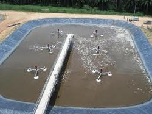

Physical treatment
- Wastewater is passed through bar screens. Large objects like rags, sticks, cans, plastic packets, napkins are removed.
- Water then goes to a grit and sand removal tank. The speed of the incoming water is decreased to allow sand, grit and pebbles to settle down.
- The water is then allowed to settle in a large tank which is sloped towards the middle. Solids like faeces settle at the bottom and are removed with a scraper. This is the sludge. A skimmer removes the floatable solids like oil and grease. Water so cleared is called clarified water.

www.indiamart.com

www.savi-water.com

www.indiamart.com
Biochemical treatment
-

- Air is pumped into the clarified water to help aerobic bacteria to grow. Bacteria consume human waste, soaps and other unwanted matter still remaining in clarified water.
- After several hours, the suspended microbes settle at the bottom of the tank as activated sludge. The water is then removed from the top.
- The treated water is then discharged into a sea, a river or into the ground. Nature cleans it up
further.
Sometimes it may be necessary to disinfect water with chemicals before releasing it into the distribution system.
www.indiamart.com